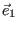
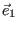
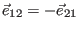
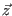
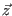
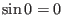
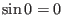

Next: Subspaces Up: Vector Spaces Previous: Inner Products: the Dot Contents Index
Just as we have directed line segments, it is possible to define directed areas. This may seem
a strange concept at first, but it is really quite straightforward. First, let us consider what we
really mean when we talk about area. If we have a rectangle 2 meters wide and 3 meters in height, we
say that its area is  square meters. In other words, it has an area equivalent to 6 unit squares.
Since ordinary multiplication is commutative, the order in which we multiply doesn't matter, so
square meters. In other words, it has an area equivalent to 6 unit squares.
Since ordinary multiplication is commutative, the order in which we multiply doesn't matter, so  .
When we give an area as a simple real number, we have lost the information about the order in which we multiplied.
Sometimes this information is valuable, as we shall see. One way to keep this information in our calculations
is to use unit bivectors. Look at Figure 5.13 and match it to the following definition.
.
When we give an area as a simple real number, we have lost the information about the order in which we multiplied.
Sometimes this information is valuable, as we shall see. One way to keep this information in our calculations
is to use unit bivectors. Look at Figure 5.13 and match it to the following definition.
The bottom two sketches in Figure 5.13 show an easy way of remembering the orientation (direction) of a unit bivector.
The symbol  is used to denote the outer product, sometimes referred to
as the wedge product, so that
is used to denote the outer product, sometimes referred to
as the wedge product, so that
 would be spoken as
would be spoken as  wedge
wedge  .
.
When we have drawn lines and planes, we have made use of a coordinate system. It is not always necessary or even
desirable to do so. The definition of a unit bivector refers to two orthonormal vectors, which do not have to be
parallel to the  and
and  axes. When we refer to unit vectors, we will adopt the convention of representing them
as 
,
axes. When we refer to unit vectors, we will adopt the convention of representing them
as 
,  , etc. A unit bivector made from the two unit vectors
and
, etc. A unit bivector made from the two unit vectors
and  will
be represented by
will
be represented by
 or
or
 such that
such that
It should be apparent from the previous definition that  .
Our purpose in adopting this notation is to give a geometric interpretation to many of the ideas
which we will encounter in the rest of this text
(and to save some typing). We will construct geometric objects in
 and show how to represent these objects using the definitions and theorems of linear algebra. We will
manipulate these objects using matrix arithmetic in order to shrink them, expand them, rotate them and alter
them in other ways. We will then use the methods we develop to apply to solving problems in other areas.
We start with a discussion of the use of unit vectors and unit bivectors on a plane and then extend
these concepts to
and show how to represent these objects using the definitions and theorems of linear algebra. We will
manipulate these objects using matrix arithmetic in order to shrink them, expand them, rotate them and alter
them in other ways. We will then use the methods we develop to apply to solving problems in other areas.
We start with a discussion of the use of unit vectors and unit bivectors on a plane and then extend
these concepts to
 .
.
A parallelogram is a four-sided object on the plane such that the length of opposite sides are equal. This also means that opposite angles are equal. The simplest kinds of parallelograms are squares and rectangles. The area of a rectangle is easy to calculate and we would like a formula which will give us the area of a parallelogram. We will use Figure 5.14 as a guide to develop a formula.
Figure 5.14 does not encompass situations such as Figure 5.15.
Figure 5.15 shows how such a parallelogram can be cut up and rearranged into
an equivalent rectangle. These two diagrams represent all parallelograms.
The parallelogram in yellow at the top of Figure 5.15 is similar to the
parallelogram given in Figure 5.14.
From the definition of  we have that
we have that
 or
or
 . This lets us use algebra to give
the formula that
. This lets us use algebra to give
the formula that
The area of the parallelogram we calculated is not a directed area. In order to use this
result to talk about directed areas, we need to reformulate our geometrical exercise
into the language of vectors and bivectors. If we replace the line segments in our diagrams
with vectors, we have three vectors  , 
and
. The norms of the
vectors are equal to the lengths we stipulated in the geometrical diagrams so that
, 
and
. The norms of the
vectors are equal to the lengths we stipulated in the geometrical diagrams so that
 x, etc.
x, etc.
We have seen previously that scalar multiplication of a vector results in a change in the magnitude
of the vector but does not affect its direction. If we have a vector in
 , for example, that is
parallel to a unit vector
, then this vector is
, for example, that is
parallel to a unit vector
, then this vector is
 . The vector
. The vector
 is a scalar multiple of a unit vector. We can now see that the outer product of two vectors
on a plane is a scalar multiple of a unit bivector. This gives us a directed area. Notice that
the unit vectors used to define unit bivectors are not necessarily parallel to coordinate axes.
We do need to adopt the convention that
is a scalar multiple of a unit vector. We can now see that the outer product of two vectors
on a plane is a scalar multiple of a unit bivector. This gives us a directed area. Notice that
the unit vectors used to define unit bivectors are not necessarily parallel to coordinate axes.
We do need to adopt the convention that
 is a unit bivector that has a counter-clockwise
orientation. This means, of course, that
is a unit bivector that has a counter-clockwise
orientation. This means, of course, that
 has a clockwise direction.
Given two vectors,
has a clockwise direction.
Given two vectors,  and
and  , both in
, both in
 , and two unit
bivectors, then
, and two unit
bivectors, then
 will either
equal
will either
equal
 if the angle between
if the angle between
 and
and  is measured in the same direction as
is measured in the same direction as
 or
it will equal
or
it will equal
 . Remembering that

shows us
that
. Remembering that

shows us
that
 and
and
 always have zero magnitude.
always have zero magnitude.
Using parallelograms, we can convince ourselves that the outer product of unit vectors in
 is
distributive with respect to vector addition. In other words, that
is
distributive with respect to vector addition. In other words, that
Notice that since
 has zero magnitude, we remove it from the final expression on the right.
(We haven't really proved anything in a formal sense. We will do so later when we introduce
more general definitions of the inner and outer product. Our purpose here is to show how geometric
insights can lead to conjectures which we can then strengthen into theorems.)
has zero magnitude, we remove it from the final expression on the right.
(We haven't really proved anything in a formal sense. We will do so later when we introduce
more general definitions of the inner and outer product. Our purpose here is to show how geometric
insights can lead to conjectures which we can then strengthen into theorems.)
For any two vectors  and
and  in
in
 , we can use one of the vectors to
define a unit vector, so that
, we can use one of the vectors to
define a unit vector, so that
 , for instance. Then the second vector
, for instance. Then the second vector
 can be written in terms of the angle between it and the other vector and two orthonormal vectors.
can be written in terms of the angle between it and the other vector and two orthonormal vectors.
Figure 5.17 shows an example of two such vectors. Notice that the angle
where
Letting  be a scalar multiple of a unit vector, writing
be a scalar multiple of a unit vector, writing  as a linear combination
of two orthonormal unit vectors
and using the distributive property of the outer product for unit vectors
allows us to write the outer product of two vectors in
as a linear combination
of two orthonormal unit vectors
and using the distributive property of the outer product for unit vectors
allows us to write the outer product of two vectors in
 as
as
We can extend the ideas of unit bivectors to unit trivectors and further on into unit multivectors. As we are interested only in developing enough ideas to motivate a basic understanding of linear algebra, we will confine ourselves to three dimensions and the trivector. The following definition makes use of the properties of the unit bivector.
A unit trivector is a bit of three-dimensional space with a potential twist or spin. One analogy is a screw, which can be threaded right-handed or left-handed. The direction one turns a screw to get it to screw into a surface does not change with the position of the screw.
One can think of a unit bivector as the area swept out by moving a unit vector's originating point along the another unit vector from its originating point to its terminal point. The same can be said for a unit trivector, where a unit bivector composed of two unit vectors is swept along the third unit vector to give a volume. In this way we can see geometrically that the outer product of unit vectors is associative, that
Every time we use the outer product on orthonormal vectors,
we are creating an object that is one dimension greater than the
previous object. So,
is a directed line segment,
 is a directed area and
is a directed area and
 gives a directed volume.
gives a directed volume.
We will leave these geometrical constructions for now and return to them from time to time in order to illustrate general theorems in linear algebra.
![\includegraphics[width=8.48cm,height=7.2cm]{xwedgey.eps}](img1330.gif)
![\includegraphics[width=7.0cm,height=4.4cm]{parallelogram3.eps}](img1341.gif)
![\includegraphics[width=7.65cm,height=5.2875cm]{commute.eps}](img1356.gif)
![\includegraphics[width=8.0cm,height=6.0cm]{component.eps}](img1360.gif)
![\includegraphics[width=10.4cm,height=5.1cm]{trivector.eps}](img1377.gif)